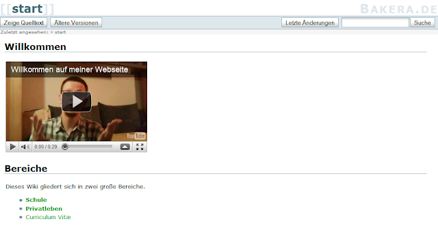

Relaunch: www.bakera.de

Meine Webseite brauchte nach langer Zeit mal wieder ein neues Gesicht. In der Vergangenheit war es mal ein Blog, dann nur eine Verzweigungseite. Jetzt habe ich auf ein Wiki gesetzt und hoffe, dass alles gut wird. Ab sofort erblüht meine Webseite also in einem neuen Gewand. Schaut es euch an …
more ...